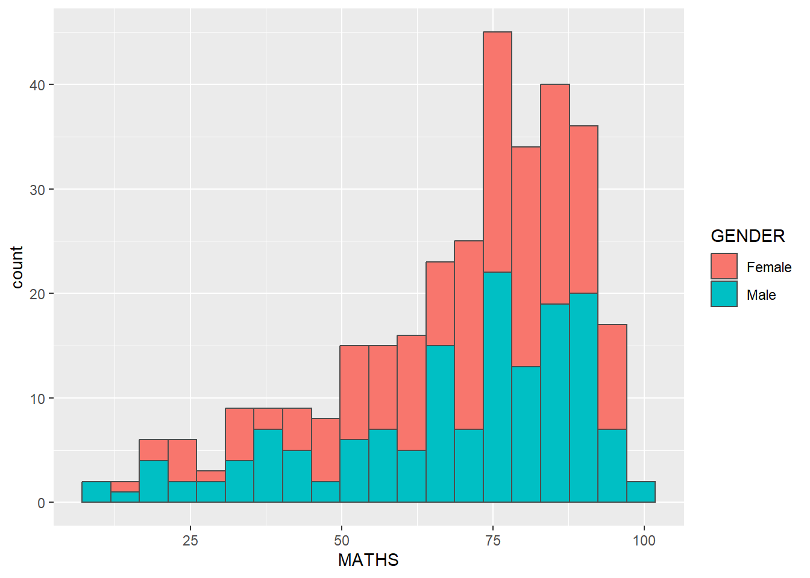
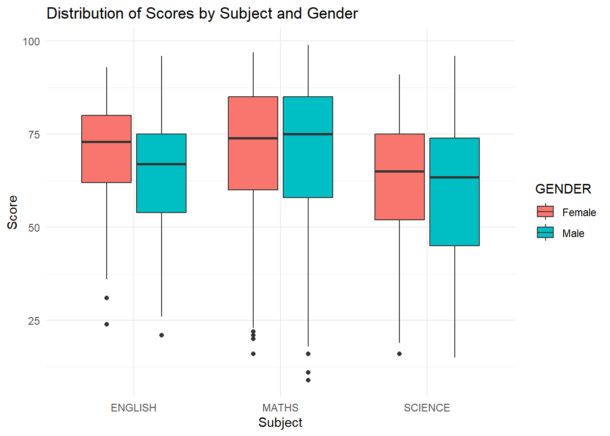
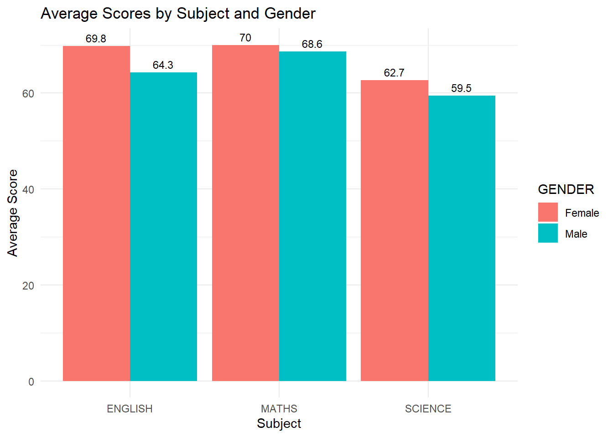
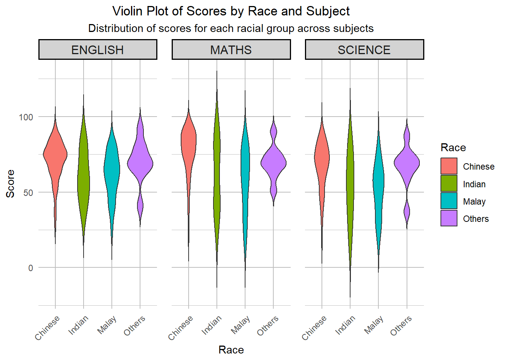
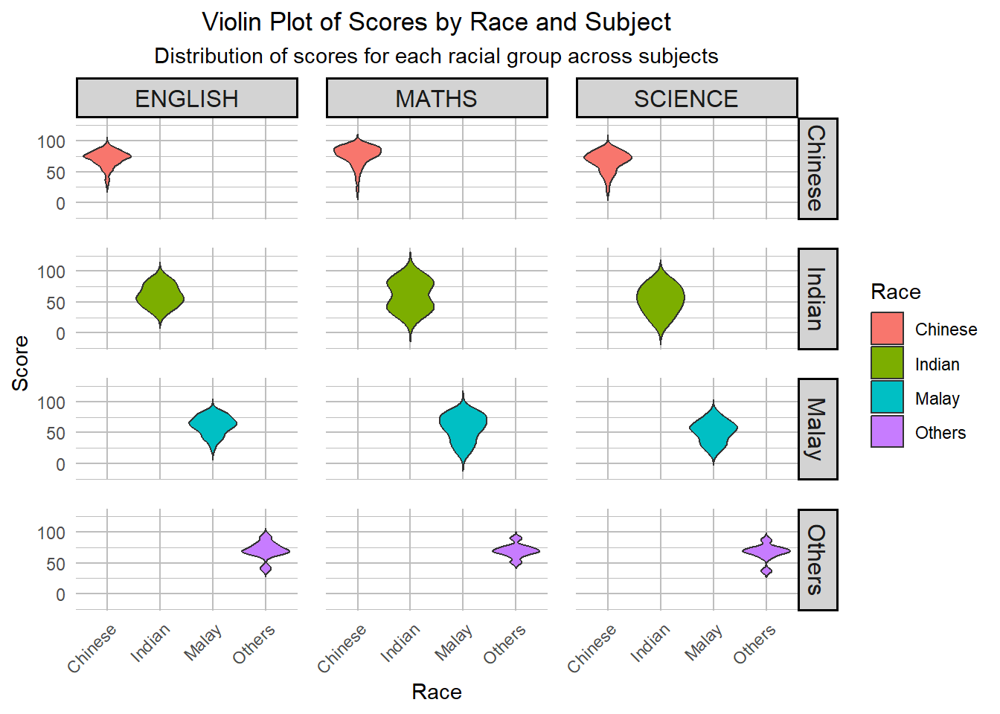

pacman::p_load(tidyverse)Hands-on Exercise 1
Getting Started
Install and launching R packages
The code chunk below uses p_load() of pacman package to check if tidyverse packages are installed in the computer. If they are, then they will be launched into R.
Importing the data
exam_data <- read_csv("data/Exam_data.csv")Rows: 322 Columns: 7
── Column specification ────────────────────────────────────────────────────────
Delimiter: ","
chr (4): ID, CLASS, GENDER, RACE
dbl (3): ENGLISH, MATHS, SCIENCE
ℹ Use `spec()` to retrieve the full column specification for this data.
ℹ Specify the column types or set `show_col_types = FALSE` to quiet this message.Plotting a simple bar chart
ggplot(data = exam_data,
aes(x = RACE)) +
geom_bar()
Plotting chart
ggplot(data=exam_data,
aes(x= MATHS,
fill = GENDER)) +
geom_histogram(bins=20,
color="grey30")
Plotting graph
ggplot(data=exam_data,
aes(x=RACE)) +
geom_bar() +
coord_flip() +
theme_minimal() 
Distribution of Scores by Subject and Gender
ggplot(data = exam_data %>% pivot_longer(cols = c(ENGLISH, MATHS, SCIENCE), names_to = "Subject", values_to = "Score"),
aes(x = Subject, y = Score, fill = GENDER)) +
geom_boxplot() +
labs(title = "Distribution of Scores by Subject and Gender",
x = "Subject",
y = "Score") +
theme_minimal()
Average Scores by Subject and Gender
# Calculate average scores by subject and gender
average_scores <- exam_data %>%
pivot_longer(cols = c(ENGLISH, MATHS, SCIENCE), names_to = "Subject", values_to = "Score") %>%
group_by(Subject, GENDER) %>%
summarize(Average_Score = mean(Score), .groups = "drop")
# Bar plot of average scores by subject and gender
ggplot(average_scores, aes(x = Subject, y = Average_Score, fill = GENDER)) +
geom_bar(stat = "identity", position = "dodge") +
geom_text(aes(label = round(Average_Score, 1)),
position = position_dodge(width = 0.9),
vjust = -0.5, size = 3) + # Adjust label position and size
labs(title = "Average Scores by Subject and Gender",
x = "Subject",
y = "Average Score") +
theme_minimal()
Violin Plot of Scores by Race and subject
# Reshape the data to long format
exam_data_long <- exam_data %>%
pivot_longer(cols = c(ENGLISH, MATHS, SCIENCE), names_to = "Subject", values_to = "Score")
# Create a violin plot to compare the distribution of scores by race and subject, faceted by subject
ggplot(exam_data_long, aes(x = RACE, y = Score, fill = RACE)) +
geom_violin(trim = FALSE) + # Use violin plot without trimming the tails
facet_grid(~ Subject) + # Facet by subject (English, Maths, Science)
labs(
title = "Violin Plot of Scores by Race and Subject",
subtitle = "Distribution of scores for each racial group across subjects",
x = "Race", # Label for the X-axis
y = "Score", # Label for the Y-axis
fill = "Race" # Legend title
) +
theme_minimal() +
theme(
axis.text.x = element_text(angle = 45, hjust = 1), # Rotate X-axis labels for readability
plot.title = element_text(hjust = 0.5), # Center the title
plot.subtitle = element_text(hjust = 0.5), # Center the subtitle
strip.text = element_text(size = 12), # Increase the size of facet labels
strip.background = element_rect(color = "black", fill = "lightgray", linewidth = 1), # Replace size with linewidth
panel.spacing = unit(1, "lines"), # Increase space between facets
panel.grid.major = element_line(color = "gray", linewidth = 0.5), # Replace size with linewidth
panel.grid.minor = element_line(color = "gray", linewidth = 0.25) # Replace size with linewidth
)
Violin Plot of Scores by Race and Subject
# Create a violin plot to compare the distribution of scores by race and subject, faceted by both subject and race
ggplot(exam_data_long, aes(x = RACE, y = Score, fill = RACE)) +
geom_violin(trim = FALSE) + # Use violin plot without trimming the tails
facet_grid(RACE ~ Subject) + # Facet by both Race (rows) and Subject (columns)
labs(
title = "Violin Plot of Scores by Race and Subject",
subtitle = "Distribution of scores for each racial group across subjects",
x = "Race", # Label for the X-axis
y = "Score", # Label for the Y-axis
fill = "Race" # Legend title
) +
theme_minimal() +
theme(
axis.text.x = element_text(angle = 45, hjust = 1), # Rotate X-axis labels for readability
plot.title = element_text(hjust = 0.5), # Center the title
plot.subtitle = element_text(hjust = 0.5), # Center the subtitle
strip.text = element_text(size = 12), # Increase the size of facet labels
strip.background = element_rect(color = "black", fill = "lightgray", linewidth = 1), # Add box around facets
panel.spacing = unit(1, "lines"), # Increase space between facets
panel.grid.major = element_line(color = "gray", linewidth = 0.5), # Add gridlines
panel.grid.minor = element_line(color = "gray", linewidth = 0.25) # Add minor gridlines
)